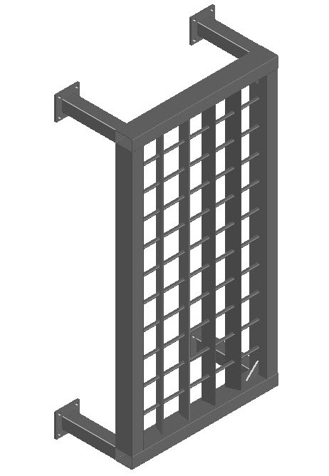
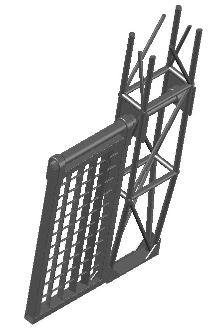
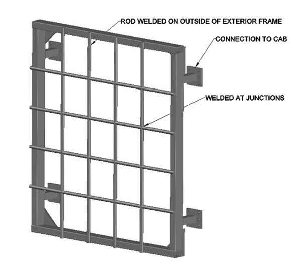
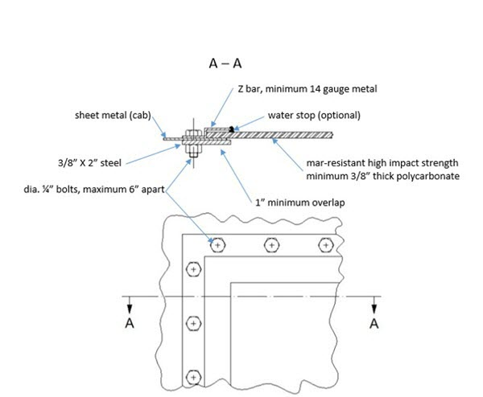
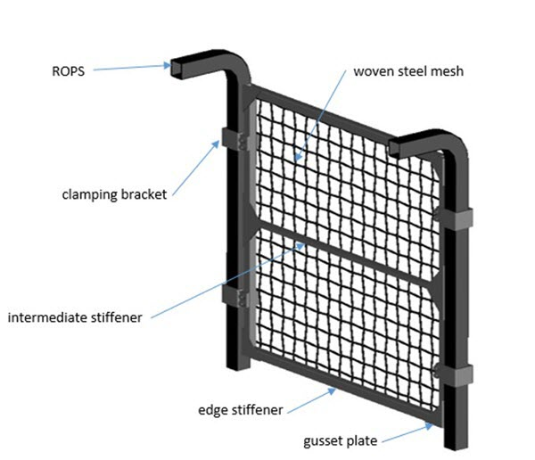

Contents
[Part 16 is repealed and a new Part 16 enacted by B.C. Reg. 139/2021, effective September 1, 2021.]
16.1 Definitions
16.2 Application
DIVISION 1 - GENERAL OPERATING REQUIREMENTS
16.3 Pre-operational inspection and monitoring
16.4 Secure objects and clean surfaces
16.5 Seat belt use
16.6 Obstructed view and pedestrians
16.7 Boarding or leaving
16.8 Rider restrictions
16.9 Unattended mobile equipment
16.10 Clearance of swinging loads or parts
16.11 Loads elevated over cabs
16.12 Securing loads
16.13 Securing elevated parts
16.14 Air brake competency
16.15 Control on grades or slopes
16.16 Tire servicing
16.17 Maintenance and records
16.18 High voltage contact
DIVISION 2 - GENERAL MACHINE REQUIREMENTS
16.19 Non-slip floors and controls
16.20 Seats
16.21 Seat belts
16.21.1 When minimum 3-point seat belts required
16.22 Starter engagement
16.23 Steering wheel knobs
16.24 Alternative means of escape from a cab
16.25 Fuel tank fill point or vent
16.26 Mirrors
16.27 Lights
16.28 Warning signal device – extended component
16.29 Brakes
16.30 Load handling attachments
16.31 Load ratings
16.32 Safeguards for moving parts
16.33 Safeguards against objects, materials and tipovers
16.34 Rollover protective structure (ROPS)
16.35 ROPS standards
16.36 ROPS certification
16.37 ROPS identification
16.38 Rollover or tipover and fire
DIVISION 3 - ADDITIONAL REQUIREMENTS FOR SPECIFIC PRIME MOVERS
16.39 All-terrain cycles
16.40 ATVs
16.41 UTVs
16.42 Earth-movers
16.43 Lift trucks
SCHEDULES
Schedule 16-A WorkSafeBC G601 Standard - Heavy Duty Backstops for Logs and Rocks
Schedule 16-B WorkSafeBC G603 Standard - Heavy Duty Guards for Windows
Schedule 16-C WorkSafeBC G604 Standard - Light Duty Guards for Windows
Mobile Equipment - Definitions and Application
[Part 16 is repealed and a new Part 16 enacted by B.C. Reg. 139/2021, effective September 1, 2021.]
16.1 Definitions
In this Part
"all-terrain cycle" means a motorized vehicle designed to travel on 3 low pressure tires, with a seat designed to be straddled by the operator and handlebars for steering;
"all-terrain vehicle" or "ATV" means a motorized vehicle, designed to travel on 4 or more low pressure tires with or without endless tracks added, with a seat designed to be straddled by the operator and handlebars for steering, but does not include an all-terrain cycle or a utility terrain vehicle;
"earth-mover" means a machine that is designed to perform excavation, loading, transportation, drilling, spreading, compacting or trenching of earth, rock and other materials;
"excavator" means a machine that is used or designed to perform excavation and has a platform that rotates 360°, with a cab and an articulating or telescoping boom;
"excluded ground machine" means, in respect of a prime mover, one of the following components, vehicles or machines:
(a) a towed component, unless the towed component generates the propulsive power for the prime mover;
(b) a machine operated on a fixed pedestal or on rails or fixed tracks as in a runway;
(c) a walk-behind, offboard-operated or remotely controlled version of the following machines:
(i) stump grinder;
(ii) trencher;
(iii) tractor, tiller, hoe or turf care machine;
(iv) mechanical harvester;
(v) snowblower;
(vi) concrete saw;
(vii) buggy for concrete or gravel;
(viii) track carrier;
(ix) pavement marker or pavement grinder;
(x) pallet jack;
(xi) floor maintainer;
(d) a tugger or a pusher;
(e) an elevating work platform not designed for travel on a highway;
"mobile equipment" means a prime mover, or a prime mover with a towed component, which towed component moves relative to the ground, or has a rider, for its work function, but does not include
(a) a prime mover, or a towed component, that is carried as a load,
(b) a commercial passenger vehicle under the Passenger Transportation Act, including a bus or a taxi, or
(c) a motor assisted cycle, scooter, minibike, skateboard or other miniature vehicle;
"pedestrians" includes workers and other persons;
"prime mover" means a self-propelled ground machine, with wheels or endless tracks, that is designed or used for work, including any attachment, but does not include an excluded ground machine;
"utility terrain vehicle" or "UTV" means a motorized vehicle designed to travel on 4 or more low pressure tires with or without endless tracks added, with one or more seats not designed to be straddled and a steering wheel or steering stick, but does not include a golf cart or other low-speed vehicle.
16.2 Application
(1) This Part applies to mobile equipment.
(2) In respect of a matter that specifically applies to mobile equipment, if there is any conflict between the requirements of this Part and the requirements of any other Part of this Regulation, then that other Part takes precedence over the provisions of this Part to the extent of the conflict, except sections 16.21 and 16.21.1, which prevail.
[Amended by B.C. Reg. 283/2024, effective March 31, 2025.]
Division 1 - General Operating Requirements
16.3 Pre-operational inspection and monitoring
(1) Before mobile equipment is first operated on a shift, the operator must inspect the mobile equipment and report any unsafe, or potentially unsafe, defects to the supervisor or employer.
(2) During operation, the operator must continuously monitor the performance of the mobile equipment and report any unsafe, or potentially unsafe, defects to the supervisor or employer.
(3) The employer of the operator must ensure that a record is kept for at least 2 years of any defect reported under subsection (1) or (2).
(4) The record of defect required by subsection (3) may be
(a) included in a record of maintenance, repair or modification required by section 16.17, or
(b) prepared as a stand-alone record.
(5) Section 4.9 does not apply to the record of defect required by subsection (3) of this section.
16.4 Secure objects and clean surfaces
The controls, cab, floor, deck, steps and similar surfaces on mobile equipment must be maintained to ensure they are free of material, grease, oil, tools and other things that could
(a) create a slipping or tripping hazard,
(b) interfere with the operation of controls, or
(c) be a hazard to the operator or other occupants in the event of an accident.
16.5 Seat belt use
(1) Riders of mobile equipment who are authorized under section 16.8 must use seat belts whenever the mobile equipment is in motion or engaged in an operation that could cause the mobile equipment to become unstable, if the mobile equipment has seat belts
(a) required under this Regulation, another law of British Columbia or a law of Canada, or
(b) installed by the manufacturer of the mobile equipment.
(2) When the operation of a road grader requires an operator to stand, the operator
(a) is not required to use a seat belt, and
(b) must use an enclosed cab with closed cab doors or other effective restraining devices.
(3) Seat belts must be maintained in good condition.
16.6 Obstructed views and pedestrians
(1) Designated walkways or safe work areas must be used to separate pedestrians from areas of operation of mobile equipment, if practical.
(2) If it is impractical to provide designated walkways or safe work areas, at least one of the following means must be used to protect pedestrians:
(a) posted speed limits for mobile equipment;
(b) the pedestrian and the mobile equipment operator must acknowledge each other's presence before the pedestrian proceeds through the hazardous area;
(c) another effective means.
(3) Subject to subsection (4), if an operator of mobile equipment cannot see the immediate work area where the mobile equipment will be moved, the operator must not move the mobile equipment unless one of the following precautions is taken to protect the operator and any other person from injury:
(a) immediately before the movement, inspection by the operator on foot of the immediate work area for hazards, including overhead hazards;
(b) direction by a signaller who is stationed in a safe position in continuous view of the operator and who has an unobstructed view of the immediate work area;
(c) another effective precaution.
(4) If an operator of mobile equipment cannot see the immediate work area directly behind the mobile equipment where the mobile equipment will be backing up, the operator must not back up the mobile equipment unless
(a) one of the precautions referred to in subsection (3) is taken,
(b) the mobile equipment has an audio warning device that
(i) provides a signal to persons in the vicinity that, if practical, is audible above the ambient noise level, and
(ii) is activated automatically when the mobile equipment controls are positioned to back the mobile equipment up, and
(c) an additional means of protecting pedestrians is used if hazards or conditions would prevent pedestrians hearing the audio warning device referred to in paragraph (b).
(5) Window glazing or window openings, and rear-view mirrors or other visual aids, must be maintained to allow clear vision.
16.7 Boarding or leaving
A person must not board or leave mobile equipment while it is moving, except for operators of rock drills that are designed to be controlled by persons in the standing position.
16.8 Rider restrictions
(1) In this section:
"barricade" means a barricade referred to as a type 1, type lA, type 2 or type 3 barricade in the Traffic Management Manual;
"buffer vehicle" means a vehicle referred to as a buffer vehicle in the Traffic Management Manual;
"drum" means a traffic control device referred to as a drum in the Traffic Management Manual;
"flashing arrow board" means a traffic sign referred to as a flashing arrow board in the Traffic Management Manual;
"multilane roadway" means a roadway that has 2 or more lanes in which traffic flows in the same direction, including climbing and passing lanes, whether or not there are also lanes in which traffic flows in the opposite direction;
"traffic cone" means a traffic cone or tubular marker referred to in the Traffic Management Manual;
"Traffic Management Manual" means the latest edition of the Traffic Management Manual for Work on Roadways issued by the Ministry of Transportation and Infrastructure.
(2) An operator of mobile equipment is the only person authorized to ride on mobile equipment unless
(a) the mobile equipment is a worker transportation vehicle, as defined in section 17.01, that meets the requirements of Part 17, or
(b) subsections (3) to (7) apply.
(3) A person other than the operator may only ride on a ROPS-equipped prime mover for the purpose of training or maintenance and, for that purpose, the prime mover
(a) must not be operated in a rollover hazard area, and
(b) must not be engaged in an operation that could
(i) cause the mobile equipment to become unstable, or
(ii) cause the person to fall or be ejected, pinched or dragged.
(4) Subsection (3) does not apply if the person, other than the operator, who is riding a ROPS-equipped snowcat or a ROPS-equipped UTV is sitting on a seat that meets the requirements of section 16.20.
(5) A person other than the operator of mobile equipment may only ride on a prime mover without a ROPS as part of a job task and
(a) must sit on a seat that meets the requirements of section 16.20, or
(b) must be protected by other safe facilities provided by the manufacturer of the mobile equipment or designed by a professional engineer, that include
(i) a footboard or platform upon which the person stands or sits, located to protect the person from contact with roadside objects or vehicles,
(ii) hand-holds, and
(iii) a safety belt, harness, guardrail or other effective means of restraint, except where the person is a swamper riding on the back of a garbage truck during short pickup runs not exceeding a speed of 20 km/h (12 mph).
(6) Rear-mounted platforms or footboards must not be occupied when the mobile equipment is backing up.
(7) A person who is occupying a rear-mounted platform or footboard on non-ROPS equipped mobile equipment as part of a method of retrieving traffic cones from a closed lane of a multilane roadway is not prohibited under subsection (6) or section 18.3 from occupying the platform or footboard when the mobile equipment is backing up if all of the following conditions are met:
(a) the mobile equipment is backing up in the closed lane;
(b) the employer has
(i) identified the hazards to the persons at the workplace, and
(ii) taken measures
(A) to eliminate the hazards, or
(B) if it is not practicable to eliminate an identified hazard, to minimize the risk to persons from the hazard to the lowest level practicable;
(c) a written safe work procedure has been established by the employer and is being followed, which procedure
(i) relates to that method of retrieving traffic cones, and
(ii) includes a description of the measures referred to in paragraph (b)(ii);
(d) the mobile equipment is not exceeding a speed of 15 km/h (9 mph);
(e) the mobile equipment has both of the following operating devices:
(i) two or more 360° flashing yellow lights;
(ii) a flashing arrow board pointing toward the open lane adjacent to the closed lane;
(f) the mobile equipment has an audio warning device that
(i) makes a distinct sound that is audible, above the ambient noise level in the workplace, to both the operator and the person, and
(ii) operates automatically and continuously while the mobile equipment is backing up;
(g) there is an effective 2-way voice communication system between the operator and the person on the platform;
(h) one of the following requirements is met:
(i) behind the rear of the mobile equipment, barricades are placed across the closed lane or drums are placed in the centre of the closed lane, in accordance with the following:
(A) the barricade or drum closest to the mobile equipment is continuously located not more than 250 m from the rear of the mobile equipment;
(B) the barricades or drums are located along the length and to the end of the closed lane at intervals of not greater than 250
(ii) directly behind and at a safe distance from the rear of the mobile equipment, in the closed lane, there is a buffer vehicle that meets the following requirements:
(A) the buffer vehicle is continuously located not more than 100 m from the rear of the mobile equipment;
(B) the buffer vehicle has 2 or more 360° flashing yellow lights and the lights are operating;
(C) the buffer vehicle has a flashing arrow board pointing toward the open lane adjacent to the closed lane and the flashing arrow board is operating;
(D) there is an effective 3-way voice communication system among the operator of the buffer vehicle, the operator of the mobile equipment and the person on the platform;
(i) the maximum load capacity established for the platform by the manufacturer or by the professional engineer who designed the platform is clearly marked on the platform and is not being exceeded.
(8) Unless otherwise provided in subsection (7), the mobile equipment, arrangements and procedures referred to in that subsection must meet all applicable requirements in respect of the equipment, arrangements and procedures that are set out for traffic control under Part 18.
16.9 Unattended mobile equipment
(1) An operator of mobile equipment must not leave the controls unattended unless the mobile equipment has been secured against inadvertent movement by
(a) engaging at least 2 effective braking or parking systems or devices, including
(i) the parking brake,
(ii) the manufacturer's specified park position for the transmission,
(iii) chocks for the wheels, or
(iv) in the case of 2-wheeled mobile equipment, stands, and
(b) chocking wheels, if necessary.
(2) An operator of mobile equipment must not leave unattended any elevated load, part, extension or machine, unless it has been landed in a safe position or otherwise immobilized and secured against inadvertent movement.
16.10 Clearance of swinging loads or parts
(1) If a hazard is created by the swinging movement of the load, cab, counterweight or any other part of mobile equipment, a person must not be within range of the swinging load or part and the operator must not move the part when any person is so exposed.
(2) Mobile equipment must be positioned so that no swinging part can come within 60 cm (2 ft) of any obstruction in any area accessible to persons or, if it is not practical to position the mobile equipment in that manner, entry to such areas must be prevented by barriers or other effective means.
16.11 Loads elevated over cabs
A person must not remain in a cab of mobile equipment while loads are elevated over the cab unless that cab is protected by an adequate overhead guard.
16.12 Securing loads
(1) A load for transport on mobile equipment must be loaded, secured and unloaded in a manner that prevents a hazard to persons.
(2) If a hazard may be created due to load shift upon deceleration that would endanger the occupants of the cab of
(a) a flatbed truck, or
(b) a truck and flatbed combination used to haul long steel structural members, poles, pipes, lumber, logs or similar materials, the means used under subsection (1) must include a cab guard, a bulkhead or another effective means to prevent the hazard.
(3) If perimeter pins are used as part of the restraint system for cylindrical objects, the pins must extend above the top of the uppermost layer adjacent to the pin by the diameter of the largest cylindrical object stacked above the uppermost layer adjacent to the pin, and have a minimum height of 46 cm (18 in).
(4) If cylindrical objects are individually blocked or otherwise effectively restrained by specialized dunnage, the perimeter pins specified in subsection (3) are not required.
16.13 Securing elevated parts
(1) If a person works beneath an elevated part of mobile equipment, the elevated part must be blocked in a secure manner.
(2) Hydraulic or pneumatic jacks must not be used for blocking unless fitted with devices to prevent their inadvertent retraction in the event of loss of hydraulic or pneumatic pressure.
(3) A tilt deck, enclosed or otherwise, on a trailer or prime mover must have a device that is capable of blocking the empty tilt deck in the raised position.
(4) A dump truck with a chassis manufactured after January 1, 1999 must have a mechanical device permanently affixed that is capable of blocking the empty dump box in the raised position.
16.14 Air brake competency
(1) A person operating mobile equipment with air brakes must have, as applicable in respect of the mobile equipment, a valid
(a) air brake certificate, or
(b) driver's licence with industrial air brake endorsement.
(2) Subsection (1) does not apply if a trainee operates the mobile equipment under the supervision of a qualified instructor.
16.15 Control on grades or slopes
To maintain adequate control and ensure safety, if the grade or condition of the travel surface may result in insufficient braking capability of mobile equipment,
(a) the mobile equipment must be restrained by a wire rope or by a synthetic rope, which may include webbing, or
(b) another machine that is suitable for the purpose of restraining the mobile equipment must be used.
16.16 Tire servicing
(1) An employer must establish and implement safe work procedures for servicing tires, rims and wheels of mobile equipment, including safe procedures for
(a) inspecting tire, rim and wheel components,
(b) mounting a tire to the rim and wheel,
(c) inflating a tire,
(d) installing and removing tire assemblies, and
(e) demounting tires from the rim and wheel assemblies.
(2) Deflation of a tire must be done in an area where ignition sources are removed or controlled.
(3) Each tire, rim and wheel part must be cleaned and inspected for damage before mounting, and cracked, broken, bent or otherwise damaged parts replaced.
(4) A person inflating a tire must stay out of the potential explosion trajectory, if it is practical to do so, and actively monitor the tire's inflation pressure.
(5) If a bead expander is used to seat the beads of a tire, it must be removed before the tire is inflated to more than 0.35 bar (5 psi).
(6) When a tire mounted on a single piece rim or wheel with a diameter more than 49.5 cm (19.5 in) is being inflated to more than 5.52 bar (80 psi), after the beads are seated, the combination of the tire with the rim or wheel must be
(a) mounted on the mobile equipment,
(b) placed in a cage or other effective restraining device, or
(c) restrained by an effective barrier, other than a chain.
(7) After the components of a multipiece rim or wheel are set in place, a tire must not be inflated to operating pressure until the rim or wheel is mounted onto the mobile equipment or has been secured in a cage or engineered containment device.
(8) Assembled rim or wheel parts must not be welded or heated, except in a limited manner to facilitate removal of a wheel from a hub after the tire has been deflated by removing the valve core.
(9) Before loosening any wheel nuts or rim clamps, a tire mounted on a multipiece rim or wheel,
(a) if larger than 900R20 (900-20), must be deflated to less than 1.38 bar (20 psi), and
(b) if equal to or smaller than 900R20 (900-20), must be completely deflated to 0 bar (0 psi).
(10) A multipiece tire and rim or wheel assembly that has been used at less than 80% of the recommended inflation pressure for that application must be deflated, disassembled and inspected before reinflation.
16.17 Maintenance and records
(1) Mobile equipment must not be maintained, repaired or modified while in operation unless continued operation is essential to the process of maintenance, repair or modification and measures are taken to eliminate or minimize any risks associated with the process.
(2) Records for any maintenance, repair or modification that affects the safe performance of the mobile equipment must be kept and be reasonably available to the operator and maintenance personnel during work hours.
(3) Section 4.9 does not apply to records required under subsection (2) of this section, except as otherwise provided in sections 13.22, 14.14, 16.43 and 20.29.
16.18 High voltage contact
(1) In this section, "high voltage contact" means contact between mobile equipment and a high voltage electrical source as defined in section 19.1.
(2) If mobile equipment has been subject to high voltage contact, it must be removed from service until a qualified person has conducted an inspection of, and completed any necessary repairs to, the mobile equipment.
Division 2 - General Machine Requirements
16.19 Non-slip floors and controls
Foot controls, cab floors, decks, steps and similar surfaces on mobile equipment where a person walks or stands must be constructed of, or covered with, a suitable non-slip material.
16.20 Seats
(1) A safely located and securely mounted seat must be provided for the operator of mobile equipment and for any other authorized rider who is required to be seated under section 16.8, unless the mobile equipment is designed to be controlled or ridden by persons in the standing position.
(2) The operator's seat must enable the operator to safely operate the mobile equipment with due regard for
(a) the type and intended use of the mobile equipment,
(b) the reach distances to the controls of the mobile equipment, and
(c) the duration of use of the mobile equipment.
(3) Seating for mobile equipment that is operated on rough terrain must provide adequate lateral restraint.
16.21 Seat belts
Unless section 16.21.1 applies, a ROPS-equipped prime mover must have, at minimum, 2-point lap belts that meet the requirements of one of the following standards or the earlier version of the standard that applied on the date of manufacture of the prime mover:
(a) Society of Automotive Engineers (SAE) Standard J386APR2022, Occupant Restraint System for Off-Road Work Machines;
(b) SAE J2292 (2016), Combination Pelvic and Upper Torso Operator and Occupant Restraint Systems for Off-Road Work Machines;
(c) ISO 6683 (2005) Earth-moving machinery - Seat belts and seat belt anchorages - Performance requirements and tests - Second edition;
(d) ISO 3776, Tractors and machinery for agriculture - Seat belts - Part 1 (2006), Part 2 (2013) and Part 3 (2009);
(e) Economic Commission for Europe of the United Nations (UNIECE) ECE Regulation No. 16, Safety-belts.
[Amended by B.C. Reg. 283/2024, effective March 31, 2025.]
16.21.1 When minimum 3-point seat belts required
(1) In this section, "haul truck" means a haul truck designed for off-highway use, including a rigid dump truck, articulated dump truck or rock truck.
(2) This section applies to the following ROPS-equipped prime movers manufactured on or after March 31, 2027, other than a worker transportation vehicle as defined in section 17.01:
(a) a haul truck;
(b) a prime mover, other than a road grader, that is used in or that is designed or adapted for use in a forestry operation as defined in section 26.1;
(c) a prime mover that is used for an activity related to fighting forest fires, including fire prevention, fire suppression, deactivating roads and fire guards and site rehabilitation;
(d) a prime mover that is used for land clearing on a slope which exceeds 35%.
(3) The seat of a ROPS-equipped prime mover to which this section applies, other than the seat occupied by a person authorized to ride for a purpose set out in section 16.8(3), must have, at minimum, 3-point seat belts that meet the requirements of one of the following standards or the earlier version of the standard that applied on the date of manufacture of the prime mover:
(a) SAE J2292 (2016), Combination Pelvic and Upper Torso Operator and Occupant Restraint Systems for Off-Road Work Machines;
(b) Economic Commission for Europe of the United Nations (UN/ECE) ECE Regulation No. 16, Safety-belts.
[Enacted by B.C. Reg. 283/2024, effective March 31, 2025.]
16.22 Starter engagement
(1) Mobile equipment must be protected against starter motor engagement when the engine is coupled to the wheels or tracks.
(2) A dump truck is exempt from subsection (1) only
(a) if it is designed for remotely controlled alignment for coupling with its trailer, and
(b) during such coupling.
16.23 Steering wheel knobs
(1) A steering wheel knob on mobile equipment must not be used or installed if road wheel reaction forces to the steering wheel are hazardous to the operator.
(2) A steering wheel knob must be a low profile or mushroom type and lie completely within the periphery of the steering wheel.
16.24 Alternative means of escape from a cab
(1) If mobile equipment manufactured after January 1, 2000 has a single cab entrance door, the mobile equipment must have an alternative means of escape that is clearly marked both inside and outside the cab and that
(a) is not located on the same surface as the cab entrance door,
(b) is usable regardless of the position of movable components or accessories of the machine,
(c) does not pose additional hazards to the operator,
(d) can be opened from both the inside and outside without the use of tools when the mobile equipment is in use,
(e) requires a force of not more than 135 N (30.3 lbf) to open, and
(f) provides a clear opening, the minimum dimensions of which comply with ISO Standard 2867-2011(R2016), Earth-moving machinery - Access systems.
(2) Mobile equipment manufactured before January 1, 2000 with a single cab entrance door must meet the requirements for an alternative means of escape required at the date of manufacture.
16.25 Fuel tank fill point or vent
A fuel tank fill point or vent opening is not permitted within an enclosed cab of mobile equipment.
16.26 Mirrors
(1) Except as provided in this section, mobile equipment must have at least one mirror that provides an operator of the mobile equipment with an undistorted reflected view to the rear.
(2) A lift truck may be equipped with only one parabolic mirror.
(3) A mirror described in subsection (1) is not required if the conditions of use or mobile equipment structure makes the use of mirrors impractical.
16.27 Lights
(1) Mobile equipment must have lights and the lights must be used to adequately illuminate the mobile equipment's direction of travel, the working area within close proximity and the cab instruments, if the mobile equipment is used
(a) during the period from 1/2 hour after sunset to 1/2 hour before sunrise and work area lighting is inadequate, or
(b) when persons or vehicles are not clearly discernible at a distance of 150 m (492 ft).
(2) The lights required under subsection (1) must meet the requirements of the Society of Automotive Engineers (SAE) J1029 2012, Lighting and Marking of Construction, Earthmoving Machinery or the earlier version of the standard that applied on the date of manufacture of the mobile equipment.
16.28 Warning signal device - extended component
(1) Dump trucks used to transport any material, and any other mobile equipment used to collect, transport or compact waste material or recyclable material, must, while in transit, have a visual or audio warning device that
(a) provides a signal to the operator when a lifting mechanism, top door cover, body, tilt frame or tailgate component is extended in a manner that
(i) is likely to contact an overhead obstruction, or
(ii) creates a hazard, and
(b) meets the requirements of subsection (2) or (3), as applicable.
(2) If a visual warning device is provided under subsection (1), the visual warning signal from the device must display within the operator's field of vision.
(3) If an audio warning device is provided under subsection (1), the audio warning signal from the device must make a distinct sound that is audible to the operator above the ambient noise level.
16.29 Brakes
(1) Subject to subsection (2), mobile equipment must have
(a) a primary service brake system,
(b) a secondary emergency or supplementary brake system, and
(c) a parking brake, whether or not it is part of the primary or secondary brake system.
(2) Subsection (1)(b) does not apply to the following:
(a) mobile equipment that
(i) has not been equipped with a secondary brake system by the original manufacturer, and
(ii) is licensed under the Motor Vehicle Act to operate on a highway;
(b) ATVs;
(c) UTVs;
(d) high and low lift trucks;
(e) skid steers;
(f) golf carts;
(g) ride-on, sit-down turf care equipment.
(3) Except as provided in sections 14.2(5)and(l2), 16.40, 16.41, 17.10 and 26.17.1, the brake systems referred to in subsection ( 1) of this section must meet the requirements of the following standards, as applicable, or the earlier version of the applicable standard that applied on the date of manufacture of the mobile equipment:
(a) ISO 3450:2011 Earth-moving machinery - Wheeled or high-speed rubber-tracked machines - Performance requirements and test procedures for brake systems;
(b) ISO 10265:2008 Earth-moving machinery - Crawler machines - Performance requirements and test procedures for braking systems;
(c) Society of Automotive Engineers (SAE) Standard J2118-2012, Braking Performance-Asphalt Pavers.
16.30 Load handling attachments
(1) Buckets, forks, booms, hoists and other load-handling attachments must be installed on mobile equipment as specified by the manufacturer of the mobile equipment unless otherwise certified by a professional engineer for use on the mobile equipment.
(2) The design of the attachments referred to in subsection (1) must provide for an evaluation of the stability of the mobile equipment, including the effect of load swing.
(3) The instructions of the manufacturer or professional engineer, as applicable, for the safe use of the mobile equipment with the attachment must be available to the operator.
16.31 Load ratings
(1) Mobile equipment designed and used for lifting, hoisting or similar operations must have a permanently-affixed notation, legible and visible to the operator, stating the rated load of the mobile equipment.
(2) A legible load chart must be displayed in the operator's cab of the mobile equipment, or be otherwise immediately available to the operator, if the rated load varies with the reach of the mobile equipment.
(3) If mobile equipment is modified, the employer must ensure that the rated load and the load chart are changed as necessary to reflect the new load ratings.
16.32 Safeguards for moving parts
(1) An exposed moving part of mobile equipment that is a hazard to the operator of the mobile equipment or to other persons must be guarded so that no person can access the hazard area created by the exposed moving part, unless the part must be exposed for proper functioning, in which case the part must be guarded as much as is practical and consistent with the intended function of the part.
(2) Mobile equipment with a moving part that is close to the operator's compartment must be effectively safeguarded so that no part of a person's body will project into the hazard area created by the moving part.
16.33 Safeguards against objects, materials and tipovers
(1) In this section and section 16.38, "tipover", in respect of mobile equipment, means a roll about the longitudinal axis of up to 90°, or a rear or frontal pitchover about the transverse axis of up to 90°, which roll or pitchover results in the contact of the cab with a surface.
(2) Operators of mobile equipment, and any other riders of mobile equipment authorized by section 16.8, must be protected against any reasonably foreseeable hazards from falling, flying or intruding objects or materials, or tipovers, by means of cabs, windows, screens, grills, shields, deflectors, guards or structures on the mobile equipment that
(a) are designed and installed to provide an adequate view for the operator to safely use the mobile equipment, and
(b) meet the requirements of
(i) at least one of the following standards, if the mobile equipment is in the scope of the standard:
(B) Society of Automotive Engineers (SAE) Recommended Practice J1356 MAR2013, Performance Criteria for Falling Object Guards for Excavators;
(C) SAE J2267 APR2007 Minimum Performance Criteria for Operator Front Protective Structures (OFPS) for Certain Equipment;
(D) ANSI/UL 752, Standard for Bullet-Resisting Equipment, 11th edition (with revisions up to and including December 11, 2015);
(E) WorkSafeBC G601 Standard - Heavy Duty Backstops for Logs and Rocks, set out in Schedule 16-A of this Part;
(F) WorkSafeBC G603 Standard - Heavy Duty Guards for Windows, set out in Schedule 16-B of this Part;
(G) WorkSafeBC G604 Standard - Light Duty Guards for Windows, set out in Schedule 16-C of this Part, or
(ii) an earlier version of at least one of the standards set out in subparagraph (i)(A) to (D), if the earlier version applied to the cabs, windows, screens, grills, shields, deflectors, guards or structures on the mobile equipment on the date of manufacture of the mobile equipment.
(3) A window on mobile equipment manufactured after February 1, 2002 or otherwise installed on mobile equipment after that date must be marked to identify the manufacturer, the standard to which the window conforms and, in the case of polycarbonate windows, the thickness and grade of material.
16.34 Rollover protective structure (ROPS)
(1) In this section, "rollover risk assessment" means an assessment of the risk that mobile equipment will experience a rollover while it is being operated by an on-board operator, based on the relevant circumstances of the proposed operation, including the following:
(a) the stability of the mobile equipment, taking into account such factors as its configuration and any attachments or towed components;
(b) whether the mobile equipment will be operated in a rollover hazard area;
(c) the nature of the activities to be performed.
(2) Mobile equipment must be used with a ROPS unless
(a) the mobile equipment is
(i) a snowmobile, ATV or any other mobile equipment designed for a standing operator or with a straddle seat, or
(ii) a golf cart, or
(b) a qualified person has completed a rollover risk assessment respecting the mobile equipment and determined there is no, or only a minimal, risk of rollover.
(3) A rollover risk assessment and determination referred to in subsection (2)(b) must be in writing if the assessment and determination pertains to one of the following types of mobile equipment:
(a) tractors, dozers, loaders, skidders, trenchers, graders, scrapers, roller-compactors, pipe layers and rough terrain lift trucks;
(b) rock drills operated by a seated on-board operator;
(c) ride-on turf care equipment heavier than 400 kg (882 lbs) manufactured after September 1, 2021;
(d) UTVs manufactured after September 1, 2021;
(e) excavators manufactured after September 1, 2021 and used in a rollover hazard area.
(4) The written risk assessment and determination referred to in subsection (3) must be available at the worksite.
(5) The Board may require a ROPS to be installed on any mobile equipment if the design of the mobile equipment or circumstances of use indicate the need.
(6) A ROPS must be designed and installed so that it does not obstruct the operator's view or ability to operate the mobile equipment safely.
16.35 ROPS standards
(1) A ROPS installed on mobile equipment other than
(a) an excavator between 6 tonnes (13 250 lbs) and 50 tonnes (110 231 lbs),
(b) powered ride-on turf care equipment heavier than 400 kg (882 lbs), or
(c) a UTV
must meet the requirements of the CSA Standard B352.0-16 - Roll-over protective structures (ROPS), falling object protective structures (FOPS), operator protective structures (OPS), and tip-over protective structures (TOPS) for mobile machinery - General Canadian requirements or the earlier version of the standard that applied on the date of manufacture of the mobile equipment.
(2) A ROPS installed on an excavator between 6 tonnes (13 250 lbs) and 50 tonnes (110 231 lbs) must meet the requirements of the ISO 12117-2: 2008 Earth-moving machinery - Laboratory tests and performance requirements for protective structures of excavators - Part 2: Roll-over protective structures (ROPS) for excavators of over 6 t.
(3) A ROPS installed on powered ride-on turf care equipment heavier than 400 kg (882 lbs) must meet the requirements of ISO 21299:2009 Powered ride-on turf care equipment- Roll-over protective structures (ROPS) - Test procedures and acceptance criteria.
(4) A ROPS installed on a UTV must meet the requirements of section 16.41(1).
16.36 ROPS certification
A ROPS must be certified by the ROPS manufacturer or a professional engineer as meeting the applicable standard specified in section 16.35, including after any modification or repair to the ROPS.
16.37 ROPS identification
A modified or repaired ROPS must be permanently marked with the following information:
(a) an identification of the modifications or repairs effected;
(b) the date of recertification;
(c) the name and address of the recertifying professional engineer or manufacturer, as applicable.
16.38 Rollover or tipover and fire
(1) This section applies to the following mobile equipment:
(a) a feller buncher;
(b) a timber harvester;
(c) a timber processor with a significant risk of rollover or tipover when operating on a sloped forest worksite other than a road or a landing.
(2) In addition to meeting the requirements of section 16.24, the mobile equipment referred to in subsection (1) must be equipped with the following:
(a) attached to the inside of the cab, a powered cutting tool able to effectively cut through steel guard bars and polycarbonate windows in a timely manner to provide an emergency means of escape;
(b) attached to the mobile equipment, in a position that is outside of the cab, a fire extinguisher in good working order with a UL Rating of at least 4-A:60-B:C;
(c) if the mobile equipment is manufactured more than 2 years after September 1, 2021, an effective engine fire suppression system that will discharge when needed in the event of a rollover or tipover.
Division 3 - Additional Requirements for Specific Prime Movers
16.39 All-terrain cycles
An all-terrain cycle must not be used in any workplace.
16.40 ATVs
(1) An ATV must meet and be used in accordance with ANSI Standard SVIA-1 2017, American National Standard for Four Wheel All-Terrain Vehicles or the earlier version of the standard that applied on the date of manufacture of the ATV.
(2) An ATV must be used in accordance with the manufacturer's instructions.
(3) The manufacturer's instructions for an ATV must be kept in a secure place with the ATV or at another location readily accessible to the operator.
(4) If the manufacturer's instructions do not include limits for the operation of the ATV on sloping ground, 5% is the maximum allowable slope unless the employer has developed and implemented written safe work procedures appropriate for any steeper slope on which the mobile equipment is to be used.
(5) The training program for an ATV operator must include training by a qualified person for the following:
(a) operating skills, according to the ATV manufacturer's instructions;
(b) the ATV operator's pre-operational inspection;
(c) basic mechanical requirements;
(d) loading and unloading the ATV for transport, if a job requirement.
(6) Loading and unloading an ATV onto or off a carrier vehicle must be done in a safe manner.
(7) If ramps are used when loading or unloading an ATV, they must be secured at a suitable angle, be sufficiently wide and have a surface finish that provides an adequate grip for the tires of the ATV.
(8) A modification or attachment to an ATV that may affect its stability must be certified by the manufacturer or a professional engineer.
16.41 UTVs
(1) A UTV must meet and be used in accordance with ANSI/OPEI B71.9-2016 Multipurpose Off-Highway Utility Vehicles or the earlier version of the standard that applied on the date of manufacture of the UTV.
(2) A UTV must be used in accordance with the manufacturer's instructions.
(3) The manufacturer's instructions for a UTV must be kept in a secure place with the UTV or at another location readily accessible to the operator.
16.42 Earth-movers
An earth-mover must meet ISO Standard 9244:2008 Earth-moving machinery - Machine safety labels - General principles or the earlier version of the standard that applied on the date of manufacture of the earth-mover.
16.43 Lift trucks
(1) The design, fabrication, use, inspection, maintenance and repair of a lift truck must meet
(a) CAN/CSA Standard B335-15-Safety standard for lift trucks, or
(b) as applicable,
(i) ANSI/ITSDF B56.1a-2018, Safety Standard for Low Lift and High Lift Trucks,
(ii) ANSI/ITSDF B56.6-2016, Safety Standard for Rough Terrain Forklift Trucks, or
(iii) ISO 10896 Rough-Terrain Trucks - Safety Requirements and Verification: Part 1 (2012): Variable-Reach Trucks; Part 2 (2016): Slewing Trucks; Part 4 (2015): Additional Requirements for Variable-Reach Trucks Handling Freely Suspended Loads
or the earlier version of the applicable standard that applied on the date of manufacture of the lift truck.
(2) Operator training for lift trucks must meet the requirements of Clause 6 of the standard referred to in subsection (1)(a).
(3) In addition to complying with the applicable requirements in this Part, a variable reach rough terrain lift truck, as defined in section 2 of the standard referred to in subsection (1)(b)(ii), must meet and be used in accordance with the requirements of sections 14.5(3), 14.7, 14.8, 14.12, 14.43 and 14.69 of this Regulation.
(4) A record of inspections and maintenance meeting the requirements of section 4.9 must be kept for a variable reach rough terrain lift truck, as defined in section 2 of the standard referred to in subsection (1)(b)(ii).
(5) In areas where lift truck use is separated from pedestrian traffic, a lift truck may travel forward with an elevated load if such operation will improve the operator's view of the path of travel, provided that operating conditions are maintained to ensure vehicle stability and the specifications of the mobile equipment manufacturer are not compromised.
(6) A unitized load being transported on a lift truck must not project a distance greater than half its height above the fork carriage, back rest or back rest extension of the lift truck.
(7) No part of a load of loose objects may project above the fork carriage, back rest or back extension of a lift truck.
(8) A load that could shift during transportation must be restrained if such shifting would result in the load or the lift truck becoming unstable.
(9) Subsections (6) and (7) do not apply if the load is assembled and handled in such a way that there is no possibility of any part of the load falling off.
[Amended by B.C. Reg. 116/2022, effective August 22, 2022.]
[Amended by B.C. Reg. 223/2022, effective March 1, 2023.]
Schedules
Schedule 16-A
WorkSafeBC G601 Standard - Heavy Duty Backstops for Logs and Rocks
1 Scope, definitions and measurements
(1) This standard describes minimum requirements for the design of a framework, grid elements and supports of a protective structure, referred to as a "backstop", over any exposed side of an operator's cab on cable log loaders and log yarders, which backstop is designed to protect the operator from head-on or side-on penetration into, or crushing of, the cab by large logs or rocks without excessive visual interference to the operator.
(2) In this standard:
"framework" means the main structural members of a backstop, consisting of horizontal and vertical edge beams;
"grid element" means a vertical or horizontal member of a backstop inside the framework;
"HSS" means hollow structural section;
"main frame" means the structural part of the undercarriage;
"supports" means the structural members connecting the backstop to the main frame, boom or substructure.
(3) In this standard, common industry practices are followed in expressing numerical measurements.
2 Design requirements
(1) A backstop must be built in accordance with one of the following:
(a) in a manner that is able to protect the operator's cab from penetration or crushing by a log that is 1 m (39.4 in) in diameter at the butt of the log and 12.8 m (42 ft) in length, weighing 4 439 kg (9 786 lbs), travelling 16 km/h (10 mph), or an equivalent combination of mass and speed of one or more rocks or more than one log, and imparting a total kinetic energy to the backstop of 44.2 kilojoules (32 600 foot-pounds);
(b) in accordance with the following minimum structural details, as applicable:
(i) for edge beams
(A) up to 3 ft long, HSS 4 in x 3 in x 1/4 in,
(B) over 3 ft and up to 6 ft long, HSS 6 in x 4 in x 1/4 in, or
(C) over 6 ft and up to 9 ft long, HSS 7 in x 5 in x 1/4 in;
(ii) for grid element sizes
(A) that are vertical grid elements, 1/2vin x 4 in ASTM A36 flat bar, or
(B) that are horizontal grid elements, 1 in diameter mild steel rod or steel elements of equivalent strength.
(2) A backstop must be positioned at least 10 cm (4 in) away from the glazed windows and exterior faces of the cab.
(3) Wire rope is not permitted for use as a grid element in a backstop.
(4) The framework must be secured to the main frame, boom or substructure of the mobile equipment.
(5) The supports, main frame, boom or substructure of the mobile equipment must be adequately designed and constructed to resist the impact loads imposed by the backstop.
(6) Gusset plates must be incorporated into each comer of the backstop if the length of an edge beam of the exterior frame exceeds 3 ft.
(7) Each grid opening must not be greater than 400 cm2 (62 in2).
(8) Minimum visual interference to the operator must be one of the governing criteria in the design and positioning of the vertical members of the guard.
(9) If flat bars are used as grid elements, they must be in a radiating pattern in line with the operator's line of sight (see Figures 1 and 2).
(10) Steel must be used for all parts of the backstop and must meet the performance requirements, including the performance requirements for cold temperatures, of the standard CAN/CSA-M3471-05 (R2015) - Earth-Moving Machinery - Roll-Over Protective Structures - Laboratory Tests and Performance Requirements (Adopted ISO 3471:1994,first edition, 1994-02-01).
3 Certification
(1) Subject to subsection (2),
(a) a backstop must be certified by the backstop manufacturer or a professional engineer as meeting this standard, and
(b) any addition, modification, welding or cutting on a backstop must be carried out in accordance with the instructions of, and the backstop must be recertified by, the backstop manufacturer or a professional engineer.
(2) Backstops manufactured prior to September 1, 2021 are exempt from subsection (1)(a) but not from any other part of this standard.
Figure 1
Mainframe-mounted Heavy Duty Backstop

Figure 2
Boom-mounted Heavy Duty Backstop

Schedule 16-B
WorkSafeBC G603 Standard - Heavy Duty Guards for Windows
1 Scope, definitions and measurements
(1) This standard describes minimum requirements for the design of heavy duty guards (see Figure 1) for front, side and rear windows in mobile equipment where the operator is exposed to hazards of intruding or flying objects, such as snapped or whipping cables, logs and tree limbs, falling rocks or concrete, and loose debris.
(2) In this standard:
"grid element" means a vertical or horizontal member of a heavy duty guard inside the framework;
"HSS" means hollow structural section.
(3) In this standard, common industry practices are followed in expressing numerical measurements.
2 Design requirements
(1) A heavy duty guard must be able to protect the operator from one or more objects imparting an absorbed kinetic energy level of 11 526 joules (8 500 foot-pounds).
(2) When steel is used, a heavy duty guard must provide protection for the entire surface area of the window and must be positioned as follows:
(a) to allow for window cleaning, at least 10 cm (4 in) away from the exterior face of the window;
(b) to prevent side intrusion, not more than 20 cm (8 in) away from the exterior face of the window.
(3) When steel is used for a heavy duty guard, it must be suitable for cold temperatures as meeting the requirements of the standard CAN/CSA-M3471-05 (R2015) - Earth-Moving Machinery - Roll-Over Protective Structures - Laboratory Tests and Performance Requirements (Adopted ISO 3471:1994, first edition, 1994-02-01), which may be satisfied by using steel that is equivalent to ASTM A36, CSA G40.21 33G, 44W for plates, bars and angles and CSA G40.21 50W for HSS.
(4) The exterior frame of a steel heavy duty guard must be secured to the structural parts of the cab, which must be adequately designed and constructed to resist the impact loads imposed by the guard.
(5) The minimum edge beam size of a steel heavy duty guard must not be less than HSS 2.5 in x 1.5 in x 0.125 in.
(6) Gusset plates must be incorporated into each comer of a steel heavy duty guard if the length of an edge beam of the exterior frame exceeds 3 ft.
(7) Each grid opening in a steel heavy duty guard must not be greater than 20 cm x 20 cm (8 in x 8 in).
(8) The minimum size of the grid element in a steel heavy duty guard must be 1.9 cm (3/4 in) mild steel rod or a steel element of equivalent strength.
(9) The minimum mild steel rod diameter or steel element, as applicable, set out in subsection (8) must be proportionately increased if a steel heavy duty guard is longer or wider than 3 ft.
(10) Minimum visual interference to the operator must be one of the governing criteria in the design and positioning of the vertical members of a steel heavy duty guard.
(11) If steel flat bars are used as grid elements, they must be in a radiating pattern in line with the operator's line of sight.
(12) Effective September 1, 2021, wire rope is not permitted for construction of a new steel heavy duty guard.
(13) If nuts and bolts are used in the fabrication of a heavy duty guard, they must be Grade 8, at minimum.
(14) Materials with equal or better properties, including polycarbonate, may be used in place of those stipulated in this standard.
Figure 1
Typical Heavy Duty Guard

Schedule 16-C
WorkSafeBC G604 Standard - Light Duty Guards for Windows
1 Scope, definitions and measurements
(1) This standard describes minimum requirements for the design of light duty guards for front, side and rear windows in mobile equipment such as dozers, loaders, skidders, excavators and mulchers, where the operator is exposed to hazards of intruding or flying objects such as jill-pokes, individual brick-sized objects, rock or wood chips, and metal shrapnel.
(2) In this standard, "HSS" means hollow structural section.
(3) In this standard, common industry practices are followed in expressing numerical measurements.
2 Design requirements - general
(1) Light duty guards must each be able to protect the operator from one or more objects imparting the equivalent of a static load of 17 800 newtons (4 000 lbf) applied to an area of 64 cm2 (10 in2) anywhere on the guard.
(2) If a window is made of tempered glass, a light duty guard must be made of polycarbonate or steel mesh.
(3) If a window opening without glazing requires light duty guarding against metal shrapnel or other objects small enough to pass through steel mesh, the guard must be made of polycarbonate, whether or not there is already a steel mesh guard over the window opening.
(4) Minimum visual interference to the operator must be one of the governing criteria in the design and positioning of the light duty guard.
(5) On ROPS-equipped mobile equipment, a light duty guard may be attached to parts of the ROPS provided that the attachment does not adversely affect the performance of the ROPS and all the attachments must be clamped unless welding is permitted by the ROPS manufacturer or a professional engineer.
3 Design requirements - polycarbonate guards
Polycarbonate guards (see Figure 1) must
(a) be a minimum of 9.5 mm (3/8 in) thick,
(b) not be drilled into or have been drilled,
(c) overlap the window by 2.54 cm (1 in) all around, and
(d) be mounted to the cab in accordance with Figure 1 and the cab must be adequately designed and constructed to resist the impact loads imposed by the guard.
Figure 1
Mounting Detail for Light Duty Polycarbonate Guard

4 Design requirements - steel mesh guards
(1) Steel mesh guards (see Figure 2) must be suitable for cold temperatures as meeting the requirements of CAN/CSA-M3471-05 (R2015) - Earth-Moving Machinery - Roll-Over Protective Structures - Laboratory Tests and Performance Requirements (Adopted ISO 3471: 1994, first edition, 1994-02-01), and may be satisfied by using steel that is equivalent to ASTM A36, CSA G40.21 33G, 44W for plates, bars and angles and CSA G40.21 50W for HSS.
(2) A steel mesh guard must provide protection for the entire surface area of the window and must be positioned at least 10 cm (4 in) away from the exterior face of the window to allow for window cleaning.
(3) The exterior frame of a steel mesh guard must be secured to the structural parts of the cab, which must be adequately designed and constructed to resist the impact loads imposed by the guard.
(4) Minimum edge beam size of the exterior frame must be at least HSS 1 in x 1 in x 0.125 in.
(5) Wherever there is an unsupported area of mesh greater than 0.5 sq m (5.4 sq ft), an interior intermediate stiffener must be installed to add rigidity and transfer loads from the mesh to the exterior frame and must be welded to the exterior frame.
(6) The minimum size of intermediate stiffeners must be 1 in x 0.5 in flat steel bar.
(7) Gusset plates must be incorporated if the length of an edge beam of the exterior frame exceeds 3 ft.
(8) Each opening in the steel mesh must not be greater than 4.5 cm x 4.5 cm (1 3/4 in x 1 3/4 in), and the mesh must be made of a welded or woven wire of a minimum of 6 mm, which is welded to the exterior frame.
(9) If nuts and bolts are used in the fabrication of the guard, they must be Grade 8, at minimum.
(10) Effective September 1, 2021, wire rope is not permitted for use in a steel guard.
Figure 2
Typical Light Duty Steel Mesh Guard
